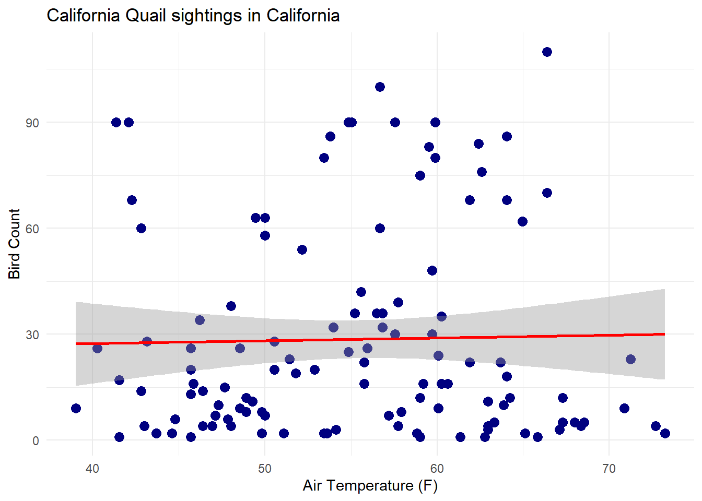
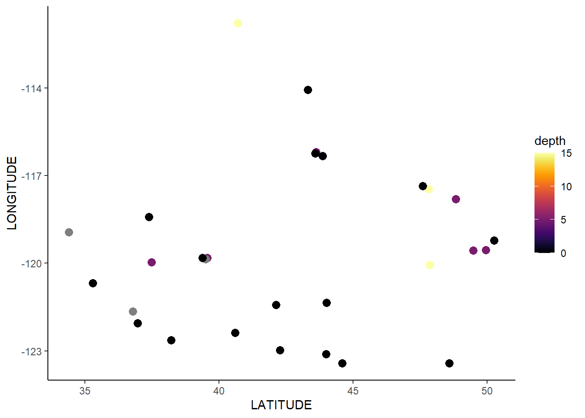
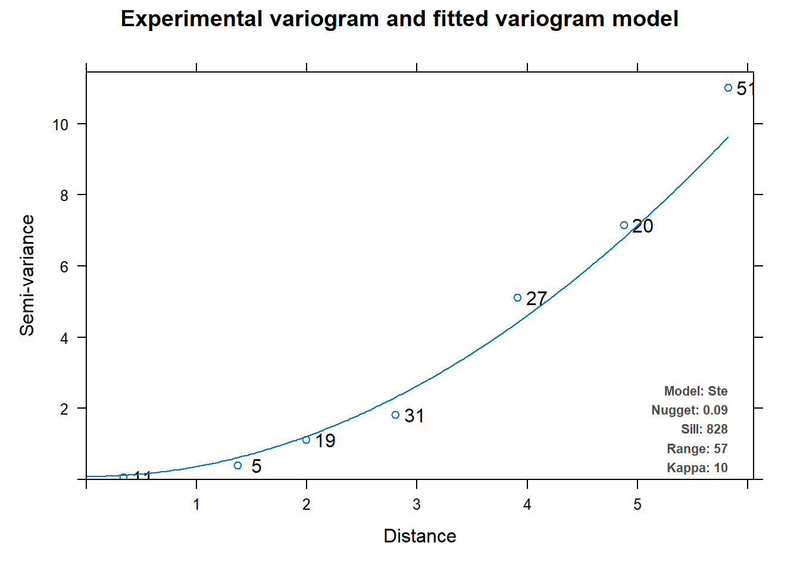
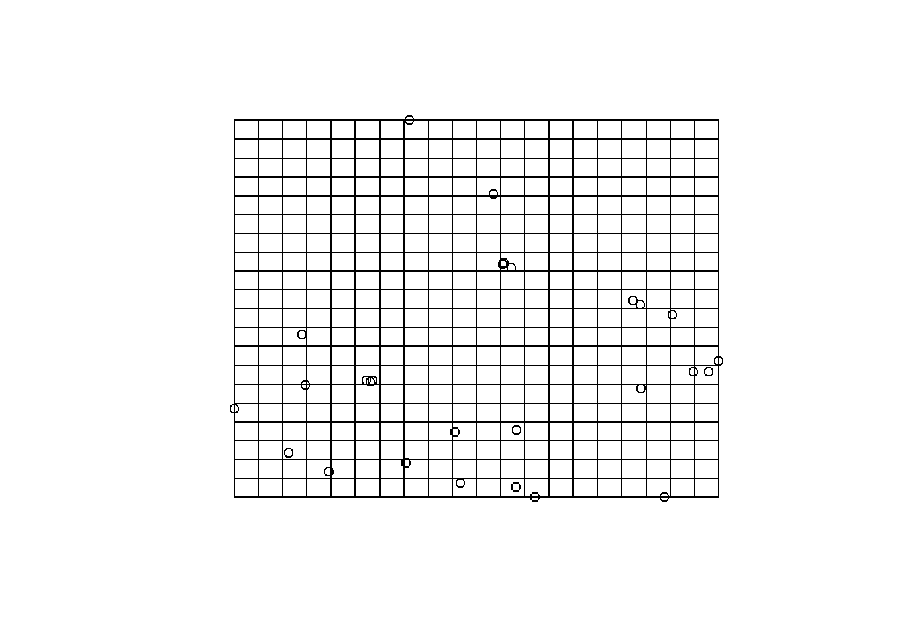
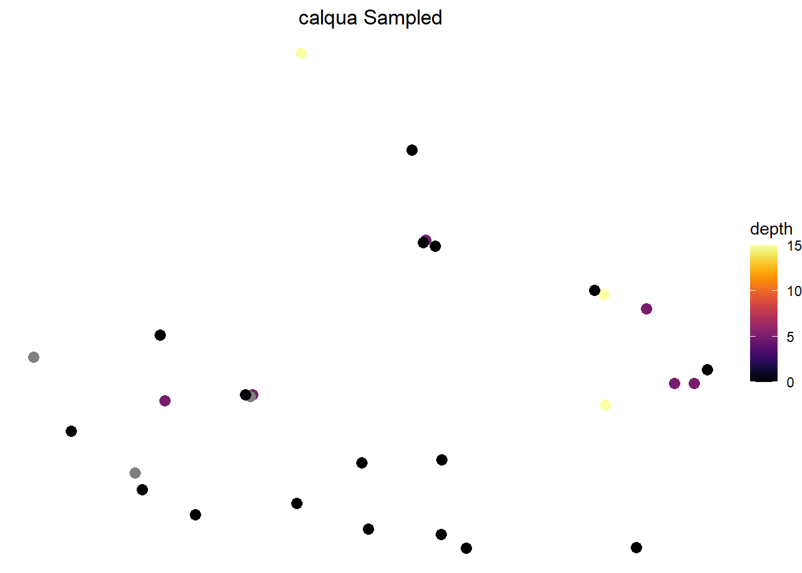
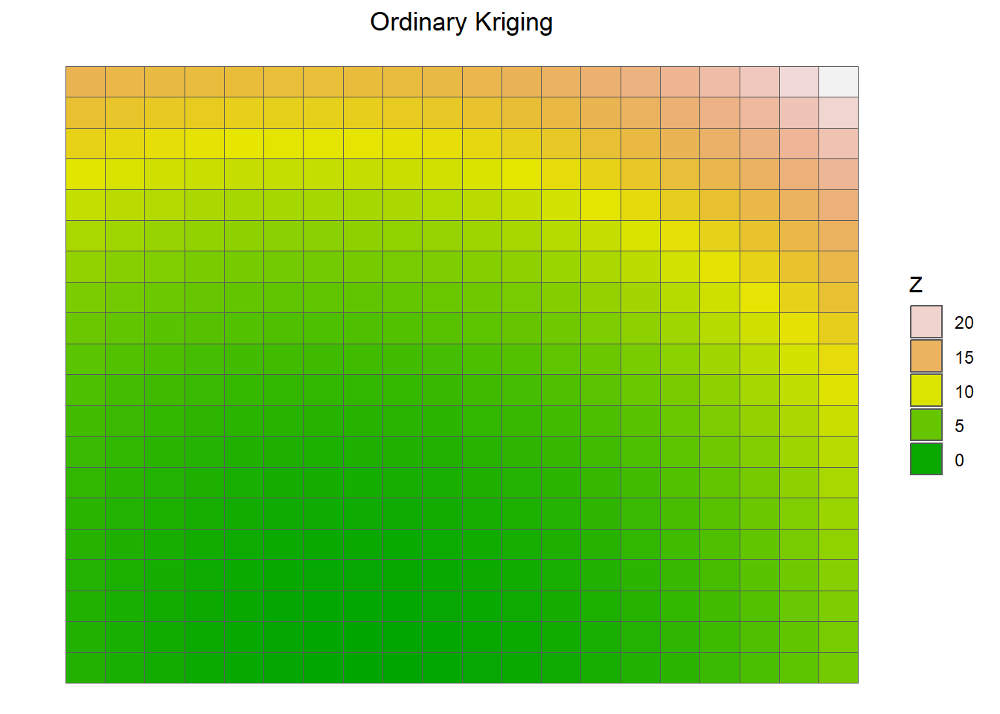
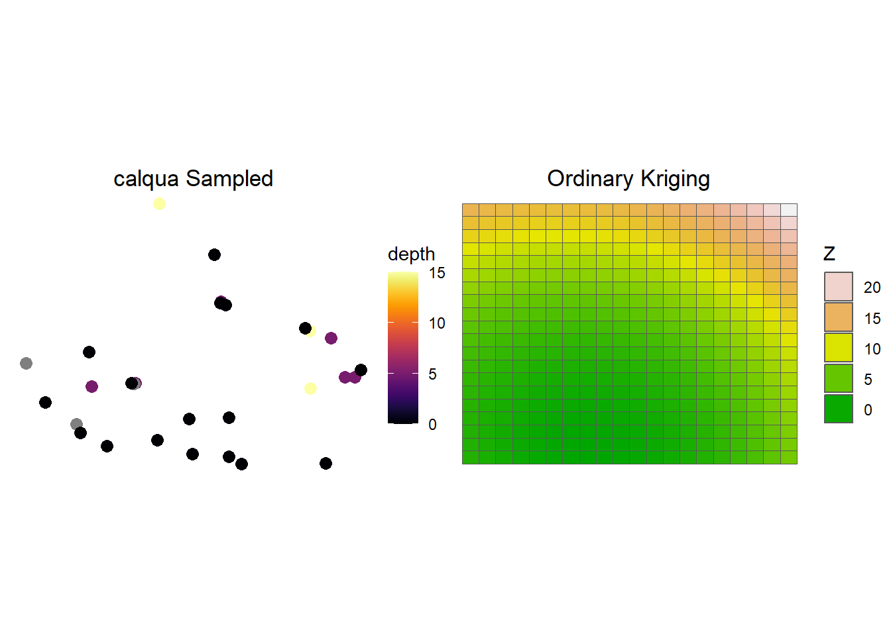

Can proxy data help determine th Urban Heat Index in California?
Using proxy data to determine if they are accurate enough to use as an alternate to Urban heat index
Author
Rosemary Juarez
Project Overview
Motivation
Urban heat islands (UHIs) are areas within cities that experience significantly higher temperatures compared to their rural surroundings. This phenomenon arises due to the replacement of natural surfaces with impervious materials, such as asphalt and concrete, which absorb and retain heat. UHIs pose substantial risks to human health, particularly those in dense, concrete jungles. Higher temperatures can worsen heat-related illnesses, increase cardiovascular illness risk, and contribute to dehydration. Vulnerable populations, such as the elderly and individuals with pre-existing health conditions, are particularly at risk.
UHI are also tied to environmental concerns, as the intensified heat can also compromise air quality by promoting the formation of ground-level ozone and other pollutants. As heat increases in the city, so does energy consumption. This leads to higher energy-consumption, leading to environmental degradation.
(heat_index.jpg)
We can usually spot out on a map where these heat islands occur, known as an Urban heat index map. However mapping out the index itself is a complicated task. Not only does this require satellite data for surface temperature, we require hourly air temperature. This is both time-consuming and costly. However, a question I have is whether we can use proxy data to get a closer estimate of an urban heat index, using correlation and linear regression to see if this is possible. I also want to investigate whether bird data could provide more accuracy if we applied interpolation on areas where birds cannot be accurately counted.
I am interested in the correlation between bird count and temperature, as from personal experience, I do not hear birds often during very hot days. Finding out if it is due to the temperature is my interest.
Question
Can I draw conclusions about the urban heat islands using samples of air temperature and bird sightings?
Data and Methods
The data was obtained from two sources: Kaggle and Ebirds.
Ebirds 2014: For Bird count, I used the Ebird Taxonomy List That lists from 2012-2023 all bird species count. The CSV file contains spatial coordinates, as well as z coordinates, indicating the height in which the birds were found. For Bird Species I will be focusing
Air temperature in San diego: I received this air temperature From the website Kaggle. The data originates from the weather station located in San Diego, California. The weather station is equipped with sensors that capture weather-related measurements such as air temperature, air pressure, and relative humidity As California air temperature data is difficult to find for free, finding a cvs of daily temperature readings has been helpful. Columns I used for this is air_temp, which records the temperature every minute from 2011 to 2014.
To begin, I state my null and alternative hypothesis:
- Null hypothesis: There is not a significant linear relationship between California Quail count and Temperature throughout the day.
- Alternate Hypothesis: There is a significant Linear relationship between California Quail count and Temperature throughout the day.
I then call in all the libraries I will be using for this.
Code
library(tidyverse)
Warning: package 'dplyr' was built under R version 4.3.2
Warning: package 'stringr' was built under R version 4.3.2
── Attaching core tidyverse packages ──────────────────────── tidyverse 2.0.0 ──
✔ dplyr 1.1.4 ✔ readr 2.1.4
✔ forcats 1.0.0 ✔ stringr 1.5.1
✔ ggplot2 3.4.4 ✔ tibble 3.2.1
✔ lubridate 1.9.2 ✔ tidyr 1.3.0
✔ purrr 1.0.2
── Conflicts ────────────────────────────────────────── tidyverse_conflicts() ──
✖ dplyr::filter() masks stats::filter()
✖ dplyr::lag() masks stats::lag()
ℹ Use the conflicted package (<http://conflicted.r-lib.org/>) to force all conflicts to become errors
Warning: package 'feasts' was built under R version 4.3.2
Loading required package: fabletools
Warning: package 'fabletools' was built under R version 4.3.2
Code
library(here)
here() starts at C:/Users/rosem/Documents/MEDS/Courses/rosemaryjuarez.github.io
Code
library(sf)
Linking to GEOS 3.11.2, GDAL 3.6.2, PROJ 9.2.0; sf_use_s2() is TRUE
Code
library(raster)
Loading required package: sp
The legacy packages maptools, rgdal, and rgeos, underpinning the sp package,
which was just loaded, were retired in October 2023.
Please refer to R-spatial evolution reports for details, especially
https://r-spatial.org/r/2023/05/15/evolution4.html.
It may be desirable to make the sf package available;
package maintainers should consider adding sf to Suggests:.
Attaching package: 'raster'
The following object is masked from 'package:dplyr':
select
Code
library(gstat)
Warning: package 'gstat' was built under R version 4.3.2
Code
library(automap)
Warning: package 'automap' was built under R version 4.3.2
Code
library(patchwork)
Attaching package: 'patchwork'
The following object is masked from 'package:raster':
area
Code
library(viridis)
Loading required package: viridisLite
Code
library(basemaps)
Warning: package 'basemaps' was built under R version 4.3.2
Code
#setting up my basemapset_defaults(map_service ="osm", map_type ="topographic")#to call the basemapdata(ext)
I clean up the data by wrangling and renaming several outputs. And I end up with one data frame that has both air temperature and California Quail Count.
Code
#Reading in the necessary datacalqua <-read_csv("data/2014_calqua_bird_taxonomy.csv")
Rows: 180 Columns: 25
── Column specification ────────────────────────────────────────────────────────
Delimiter: ","
chr (8): LOC_ID, SUBNATIONAL1_CODE, ENTRY_TECHNIQUE, SUB_ID, OBS_ID, PROJ_...
dbl (14): LATITUDE, LONGITUDE, Month, Day, Year, HOW_MANY, VALID, REVIEWED,...
lgl (2): alt_full_spp_code, PLUS_CODE
date (1): Date
ℹ Use `spec()` to retrieve the full column specification for this data.
ℹ Specify the column types or set `show_col_types = FALSE` to quiet this message.
Rows: 1587257 Columns: 13
── Column specification ────────────────────────────────────────────────────────
Delimiter: ","
dbl (12): rowID, air_pressure, air_temp, avg_wind_direction, avg_wind_speed...
dttm (1): hpwren_timestamp
ℹ Use `spec()` to retrieve the full column specification for this data.
ℹ Specify the column types or set `show_col_types = FALSE` to quiet this message.
Code
#setting the dates to by type date.air_temp$hpwren_timestamp <-as.Date(air_temp$hpwren_timestamp) calqua$Date <-as.Date(calqua$Date) #removing any duplicates in air temperature or timestamps, and only keeping originalsair_temp <-distinct(air_temp, hpwren_timestamp, .keep_all =TRUE)#merging california Quails and air_temperature by Datecalqua_merge <-merge(calqua, air_temp, by.x ='Date', by.y ='hpwren_timestamp', all.y =FALSE)
After cleaning my data, I now plot a scatter plot showing the correlation between air_temperature and bird count in San Diego.
Code
ggplot(calqua_merge, aes(x = air_temp, y = HOW_MANY)) +geom_point(size =3, color ='navy')+geom_smooth(method='lm', color ='red') +xlab('Air Temperature (F)') +ylab('Bird Count') +labs(title ='California Quail sightings in California')+theme_minimal()
`geom_smooth()` using formula = 'y ~ x'

Figure 1: Scatter plot showing correlation between California Quail count and air temperature(F)
Analysis
I also want to run a linear regression between Air Temperature and bird count.
Code
summary(lm(HOW_MANY ~ air_temp, data = calqua_merge))
Call:
lm(formula = HOW_MANY ~ air_temp, data = calqua_merge)
Residuals:
Min 1Q Median 3Q Max
-28.41 -23.75 -11.84 10.11 80.54
Coefficients:
Estimate Std. Error t value Pr(>|t|)
(Intercept) 24.24032 18.41337 1.316 0.191
air_temp 0.07857 0.32915 0.239 0.812
Residual standard error: 29.5 on 117 degrees of freedom
Multiple R-squared: 0.0004868, Adjusted R-squared: -0.008056
F-statistic: 0.05699 on 1 and 117 DF, p-value: 0.8117
Results
When Looking at the summary table for our linear regression model, we find:
At zero degrees, we expect bird count total to be around 24
For every Fahrenheit degree increase, we expect to see .7 less bird
Our adjusted R-squared is -0.008, meaning that there are other factors that contribute to bird sightings, but air temperature does not play a huge role in San Diego
Our calculated p value is 0.8, which is higher than our significance of 0.05, so we cannot reject the null and accept that there is no significant linear relationship between California Quail count and air temperature
conclusion:
after running a linear regression analysis, we can say that we see do not see any correlation or significant linear relationship between air temperature and bird count. Meaning that either there are likely other factors that contribute to that, or there are no factors that change bird counts.
While we did not find any correlation between air temperature and bird count, we could run another analysis that explores potential spots where bird count was miscounted due to poor view in trees.
For that we can run a kriging analysis, where we can run use interpolation to predict and estimate the locations of hidden birds.
Part two: Kriging Analysis
data and methods
to start off, we can continue using our calqua_merge dataframe, as it has both x, y, and z coordinates. Our x and y represent longitude and latitude, and our z represents the estimated height in which the bird was recorded.
Code
#rename our z value to a simpler termcalqua_merge <- calqua_merge %>%mutate(depth = SNOW_DEP_ATLEAST)#clean and map our bird sighting locationscalqua_merge %>%ggplot(mapping =aes(x = LATITUDE, y = LONGITUDE, color = depth)) +geom_point(size =3) +scale_color_viridis(option ="B") +theme_classic() #optional

figure 2: bird voordinates in San Diego
Data Wrangling
We now want to convert our dataframe to an sf class for our Variogram.
Code
#turning our calqua_merge into object class sfcalqua_sf <-st_as_sf(calqua_merge, coords =c("LATITUDE", "LONGITUDE"), crs =25832) %>%cbind(st_coordinates(.))#remove na rows in calquanon_na_rows <-!is.na(calqua_sf$depth)calqua_sf <- calqua_sf[non_na_rows, ]#remove columns that have all na in calqua_sfcalqua_sf <- calqua_sf[ , colSums(is.na(calqua_sf))==0]#remove all duplicates from calqua_sf geometrycalqua_sf <-distinct(calqua_sf, geometry, .keep_all =TRUE)#remove na rows in calquanon_na_rows <-!is.na(calqua_sf$depth)calqua_sf <- calqua_sf[non_na_rows, ]#remove columns that have all na in calqua_sfcalqua_sf <- calqua_sf[ , colSums(is.na(calqua_sf))==0]#remove all duplicates from calqua_sf geometrycalqua_sf <-distinct(calqua_sf, geometry, .keep_all =TRUE)
After cleaning up the data, we can now prepare and run a variogram plot.
model psill range kappa
1 Nug 0.08737953 0.00000 0
2 Ste 827.46574208 56.95514 10
Code
#my fitted Variogram Modelplot(v_mod_full)

figure 3: our variogram does not have varying distant points, hinting that the closer points are, the less likely they are similar.
We now want to plot our grid that will hold in our kriging map, which is raster. I do 400 pixels, as I want a detailed map showing potential bird sighting
Code
grd_sf <-st_make_grid(calqua_sf, n =c(20,20))plot(calqua_sf$geometry)plot(grd_sf, add =TRUE)

We can now run our kriging analysis, which will be stored under krig_cal.
And now we can plot our original map and our kriging map.
Code
# Plot the raw wells using geom_point()p_raw = calqua_merge %>%ggplot(mapping =aes(x = LATITUDE, y = LONGITUDE, color = depth)) +geom_point(size =3) +scale_color_viridis(option ="B") +theme_classic() +ggtitle(label ="calqua Sampled") +theme_void() +theme(plot.title =element_text(hjust =0.5))# Plot the kriging output using geom_raster()p_kriging <-p_kriging <-ggplot() +geom_sf(data = krig_cal, aes(fill = var1.pred)) +ggtitle(label ="Ordinary Kriging") +scale_fill_gradientn(colors =terrain.colors(100)) +theme_void() +theme(plot.title =element_text(hjust =0.5) ) +guides(fill=guide_legend(title="Z", reverse=TRUE))print(p_raw) +print(p_kriging)



figure 5: our completeed krigings map. We see some potential bird counts in the northeastern region of the map.
Conclusion
overall, our kriging map shows that there are likely missed bird sightings in the top right corner of san diego. While we could not conclude that there is correlation between bird count and temperature, we can at least see where there are missed bird sightings.
citation:
“eBird: An online database of bird distribution and abundance.” eBird, Cornell Lab of Ornithology, Ithaca, New York, 2014, http://www.ebird.org. Accessed Date 15 December 2023.
Hildebrand, Daryl. “San Diego Daily Weather Data.” Kaggle, 1 June 2020, www.kaggle.com/datasets/darylhildebrand/san-dieoga-daily-weather-data.